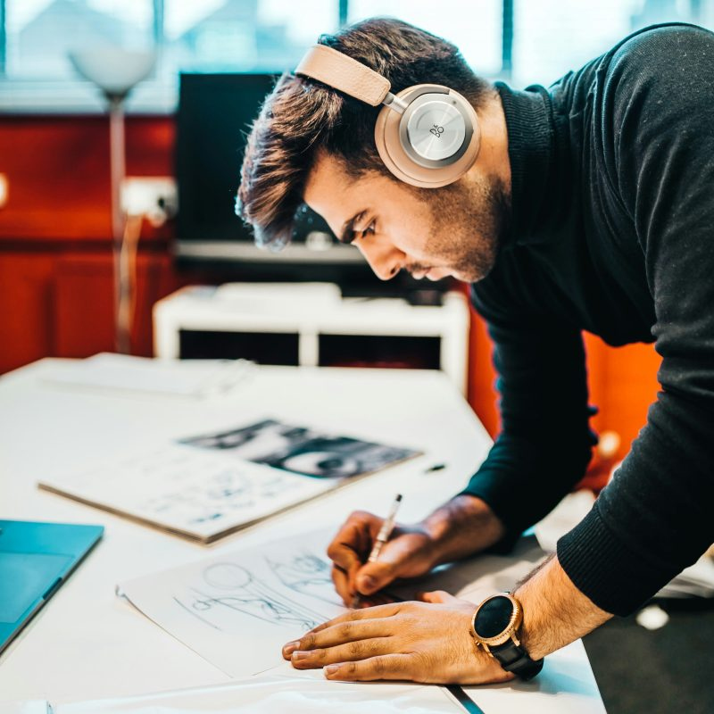

Müşteri ihtiyaçlarına özel çözümler ve özelleştirilmiş ürünler, yüksek kalite ve hızlı teslimat garantisiyle özenle üretilir.
Mevcut veya potansiyel müşterilerimizden herhangi bir talep gelmese dahi; SILVERRING AR-GE faaliyetleri kapsamında sektörel değerlendirmeler sürekli gerçekleştirilir. Yeni ürün tasarımları, mevcut ürünlerimizde teknik özellik değişimleri yapılarak farklı ihtiyaçlara cevap verecek veya sektörde uygulama kolaylığı sağlayacak yeni ürünlerin bünyemize kazandırılması sağlanır.

Mevcut müşterilerimize üretilen ve kendi proseslerinde kullanılmakta olan ürünlerimizle ilgili; müşterinin kullanım tecrübeleri, karşılaşılması muhtemel sorunlar, üretim ve teslimat uygulamalarımızda gerçekleştirilen gözlemlerden elde edilen verilere göre ürünlerimizde iyileştirme yönünde AR-GE çalışmaları yürütülmektedir.
Sürekli iyileştirme felsefesi ile gerçekleştirilen AR-GE faaliyetlerimizde müşteri memnuniyeti, kalite, maliyet ve sürdürülebilirlik unsurları ön planda tutulmaktadır.
Mevcut ve potansiyel müşterilerin taleplerine göre ihtiyaçları teknik, kullanılabilirlik ve sektörel standartlar açısından değerlendirilir. Değerlendirme sonrasında mevcut ürünlerimizden gereklilikleri karşılayanların müşteriye sunulması sağlanır. Mevcut ürünlerimizin gereksinimleri karşılamaması durumunda, müşteriye özel alternatif yeni ürünlerin teknik çalışmaları yapılır ve müşteriye sunulur.
Müşterinin tercihleri doğrultusunda AR-GE çalışmaları tamamlanır, numune üretimi ve testler gerçekleştirilerek deneme uygulamaları yapılır. Uygulamaların müşteri tarafından değerlendirmesi sonrası onaylanan ürünlerin müşteriye temini sağlanır.
Ürünlerimizde kullanılan tüm hammadde, yarı mamul ve yardımcı malzemeler için gerekli kriterler belirlenmiş, alternatifli onaylı tedarikçilerimizin belirlenmesi sağlanmıştır. SILVERRING teknik ekibi veya müşterisi tarafından tanımlanmış kritik değerlerin doğrulanması için tedarikçilerimizden test raporları istenmekte veya SILVERRING tarafından testleri yapılarak/yaptırılarak doğrulanması, kayıt altına alınması sağlanmaktadır.
Tüm ürünlerimiz ilk tasarım, iyileştirmeler ve seri üretim aşamalarında sektörel kabul görmüş standartlara ve müşteri beklentilerine uygun olarak test edilir ve sonuçları kayıt altında tutulur.
Müşterilerimizin kendilerine özel kriterlerin karşılanması ve gerçekleştirecekleri testlerin başarılı sonuçlanması için gerekli AR-GE faaliyetleri ile numune, lojistik, teknik doküman ve personel desteği sağlanmaktadır.